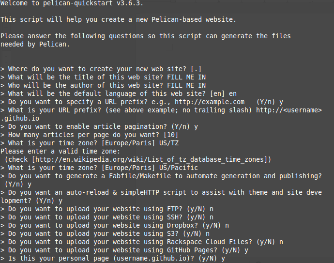

How to setup Pelican to build a blog with Travis-CI
The goal of this post is to use Pelican, a static-blogging Python package, and Travis-CI to automatically deploy a Github-hosted blog. Your blog's url will be "username.github.io". You will need Github and Travis-CI accounts.
I chose to use Pelican instead of other Python alternatives after reading this Jake Vanderplas post. These instructions are written for Linux-based operating systems (my computer uses Linux Mint) and some workarounds may be necessary if you have another operating system to install software.
Outline
- Create Github blog source repository
- Install Pelican
- Connect Github and Travis-CI
- Create Github blog repository
- Make first blog post
- Deploy Travis-CI
Create Github blog source repository
We will use two separate git repositories on Github for the source and the built website, let's first only create the repository for the source
Login to Github and create the
Install Pelican
pip install pelican
additional packages to install
pip install Markdown beautifulsoup4 typogrify Pillow webassets
change directory to .io-src folder
run pelican-quickstart to set up the pelican blogging platform. The screenshot below shows how to answer the quickstart questions to allow your blog to be hosted on Github.
pelican-quickstart

add your github.io-src repository as the origin for your blog's folder
git remote add origin <username.github.io-src>
git init .
git remote -v
add requirements.txt for pelican blog build on Travis
(echo pelican; echo Markdown; echo fabric) >> requirements.txt
add a .travis.yml file for Travis build nano .travis.yml
branches:
only:
- master
language: python
python:
- 2.7
install:
- pip install -r requirements.txt --use-mirrors
script:
- make html
notifications:
email:
on_success: always
on_failure: always
after_success: bash deploy.sh
after_script:
- git config credential.helper "store --file=.git/credentials"
- echo "https://${GH_TOKEN}:@github.com" > .git/credentials
Connect Github and Travis-CI
In order to create the encrypted token, you can login to the Github web interface to get an Authentication Token, and then install the travis command line tool with:
Select your avatar in the top right of the screen
Select settings
Select Personal access tokens
Select generate new token near upper right of the screen
copy the token to a text editor
Select your avatar in the top right of the screen again
Select integrations
Select Travis CI
Add to github account and authorize application
in the travis-ci.org webinterface
select your account name in the top right
refresh and flick the repository switch on for your .io-src repository
on Ubuntu you need ruby dev to install travis
sudo apt-get install ruby1.9.1-dev
sudo gem install travis
inside repository:
travis encrypt GH_TOKEN=LONGTOKENFROMGITHUB --add env.global
Will be prompted with "detected repository as
type yes
Then add the deploy.sh script and update the global variable with yours:
nano deploy.sh
#!/usr/bin/env bash
BRANCH=master
TARGET_REPO=<username/username.github.io.git>
PELICAN_OUTPUT_FOLDER=output
echo -e "Testing travis-encrypt"
echo -e "$VARNAME"
if [ "$TRAVIS_PULL_REQUEST" == "false" ]; then
echo -e "Starting to deploy to Github Pages\n"
if [ "$TRAVIS" == "true" ]; then
git config --global user.email "<user_email>"
git config --global user.name "<username>"
fi
#using token clone gh-pages branch
git clone --quiet --branch=$BRANCH https://${GH_TOKEN}@github.com/
$TARGET_REPO built_website > /dev/null
#go into directory and copy data we're interested in to that directory
cd built_website
rsync -rv --exclude=.git ../$PELICAN_OUTPUT_FOLDER/* .
#add, commit and push files
git add -f .
git commit -m "Travis build $TRAVIS_BUILD_NUMBER pushed to Github Pages"
git push -fq origin $BRANCH > /dev/null
echo -e "Deploy completed\n"
fi
git pull origin master
git status
git add .
git commit -m "initial commit"
git push origin master
Create blog repository
Then we can create the repository that will host the actual blog:
create the
Make a post
you cannot run deploy.sh without an initial post
cd content/
touch first-post.md
use pelican command generate static pages from files in content folder
cd ..
pelican content
you can preview your site locally before pushing and building on Travis
Other installation materials I've consulted suggest running the folliwng commands in a new terminal.
cd output
python -m pelican.server
your site is running locally at port 8000 http://localhost:8000/
commit your first post to
git status
git add .
git commit -m "added first post"
git push origin master
run deploy.sh file to build your blog with Travis
chmod +x deploy.sh
sh deploy.sh
running sh deploy.sh creates built_website folder
I receive an access denied/authentication error the first time deploy.sh executes
add your
git remote add http https://github.com/<username>/<username>.github.io.git
git remote remove origin
git remote rename http origin
git remote -v
Github defaults to Jekyll, a Ruby package, to format static .html sites. Because our blog is formatted with Pelican, we need to add a .nojekyll file to ignore Jekyll defaults
touch .nojekyll
git add .nojekyll
Commit the .nojekyll file to your .io repository
git commit -m "added .nojekyll file for formatting"
git push origin master
Commit the .nojekyll file and built_website folder to your
cd ..
git status
git pull origin master
git add built_website
git commit -m "adding .nojekyll file and built_website folder"
git push origin master
now run deploy.sh to build your website on Travis
sh deploy.sh
Your webshite is available at "username.github.io"
Workflow for posts
- Write post as .md and place in content folder
- Run pelican content
- Add and commit new posts to .io-src repository
- use deploy.sh to automatically push .io-src repository and build
References
- Pelican docmentation
- notions and notes setup pelican blog post
- Automatically build pelicanwith Travis CI